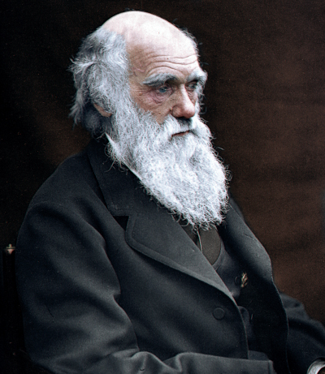
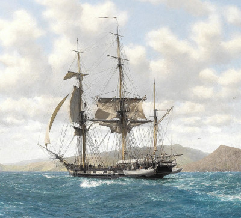
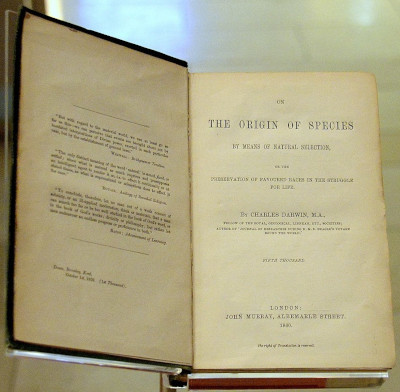
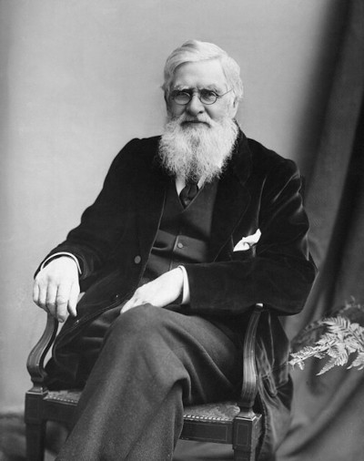

Charles Darwin
")
Desde muy pequeño Darwin dio muestras de una gran afición por el coleccionismo, le gustaba recolectar y clasificar conchas y minerales, pero también monedas y sellos. Era el quinto de seis hermanos y en su familia (especialmente en su abuelo) siempre hubo interés por el estudio de la naturaleza. De esta forma el pequeño Darwin aprendió, desde muy pequeño, a amar el conocimiento por el mundo natural. Otra idea importante que le fue enseñada desde su infancia es el respeto por todas las personas, de hecho la familia de Darwin siempre estuvo en contra de la esclavitud de personas de cualquier raza.
En 1825 ingresó en la Universidad de Edimburgo para estudiar medicina y seguir los pasos de su padre. Pero a Darwin no le interesaba la medicina y aunque aprendió muchas cosas útiles en Edimburgo (taxidermia, anatomía y geología) tras un par de años decidió, junto a su padre, ir al Christ's College en Cambridge para realizar la licenciatura en Artes y llegar a ser pastor anglicano. Durante su estancia en Cambridge Darwin aumento sus conocimientos en ciencias naturales, especialmente en entomología, gracias al profesor de botánica John Stevens Henslow.
Terminados sus estudios, en 1831, Darwin tenía claro que no quería dedicarse a la carrera eclesiástica, por el contrario cada vez estaba más decidido a dedicarse en cuerpo y alma a la investigación de la naturaleza. Inspirado por la lectura de los viajes científicos de Alexander von Humboldt, Darwin empezó a tener claro que debía ampliar sus conocimientos participando en una misión científica que le permitiera viajar a otros lugares del planeta.
Esta oportunidad le llegó muy pronto cuando embarcó en el HMS Beagle para una misión que durante cinco años le llevaría a América del Sur, África y Oceanía.
Durante este viaje Darwin pudo estudiar y recolectar muchas especies tanto marinas como terrestres. Examinó y tomo notas sobre ejemplares fósiles, plantas, invertebrados.... Pero también sobre minerales y rocas y sobre como éstas se conforman en estratos. Poco a poco, año tras año y observación tras observación, Darwin comenzó a desarrollar una idea: una hipótesis sobre el origen de las especies.
Cuando Darwin regresó a Inglaterra ya era un científico famoso debido a las colecciones de animales, fósiles y plantas que él había ido enviando durante su viaje. Tras mucho trabajo relacionado con las increíbles colecciones que había conseguido durante su misión científica, Darwin decidió casarse y unos años después se trasladó con su familia al campo, buscando la tranquilidad que necesitaba para desarrollar, con calma, sus ideas científicas. Durante muchos años estuvo estudiando sus colecciones, ampliando sus lecturas y repasando las anotaciones que realizó durante su viaje. Poco a poco fue cristalizando en su mente la idea de que la diversidad biológica se debe a que las especies han ido evolucionando a lo largo del tiempo mediante un proceso de selección natural. Esta evolución permite la adaptación de los seres vivos a los constantes cambios que sufre su entorno.
Darwin presentó su teoría a la “Sociedad Linneana de Londres”, junto con un artículo de Alfred Russel Wallace quien había llegado a las mismas conclusiones de forma independiente. Unos años después publicó sus ideas en el libro “Sobre el origen de las especies” donde desarrollaba mejor su teoría a la vez que la respalda con multitud de evidencias. Este libro fue un “superventas” y generó mucha controversia, la sociedad aún no estaba preparada para las ideas de Darwin.



